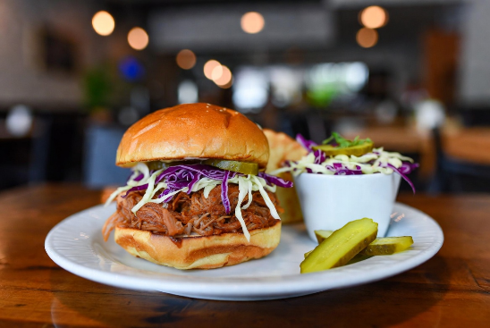

Home
Glorious Pulled Pork

Description
Behold, the pulled pork sandwich: a golden bun, toasted with the optimism of a lottery winner, cradling a haystack
of slow-cooked pork that’s surrendered into tender, sauce-slicked strands. Atop, a tousled mop of purple cabbage
slaw winks like a punk rocker at a garden party, while two pert pickle spears stand guard—dill-scented sentinels
against blandness. The whole affair looms on its plate like a delicious act of rebellion against hunger.
Ingredients
- 1 soft brioche bun (toasted, with delusions of grandeur)
- 300g pulled pork (slow cooked until it begs for mercy)
- handful of purple cabbage slaw (crisp, tart, and slightly rebellious)
- 2 dill pickle spears (standing to attention like sour faced butlers)
- Generous glug of BBQ sauce (sticky, smokey and unapologetic)
- Knob of butter (optional, but really, why wouldn't you?)
- Pinch of patience (for the slow cooker, or a take away cheat)
Steps
- Slow-cook the pork shoulder in barbecue sauce until it collapses like a politician’s promise—roughly 6 hours on
low, or cheat with pre-shredded from the deli if time’s against you.
- Butter and toast the brioche bun until it’s golden and smug, humming with self-importance.
- Pile the pulled pork high in the bottom bun, forming a carnivorous haystack that defies gravity and good sense.
- Drizzle extra barbecue sauce over the pork like a sticky confession you’ll regret later.
- Heap on the purple cabbage slaw—tart, crunchy, and purple enough to offend the colour-blind.
- Cap with the top bun, pressing down just enough to threaten structural integrity.
- Flank with two dill pickle spears, standing like sarcastic bookends.
- Serve immediately, before the whole thing stages a delicious coup on your lap.